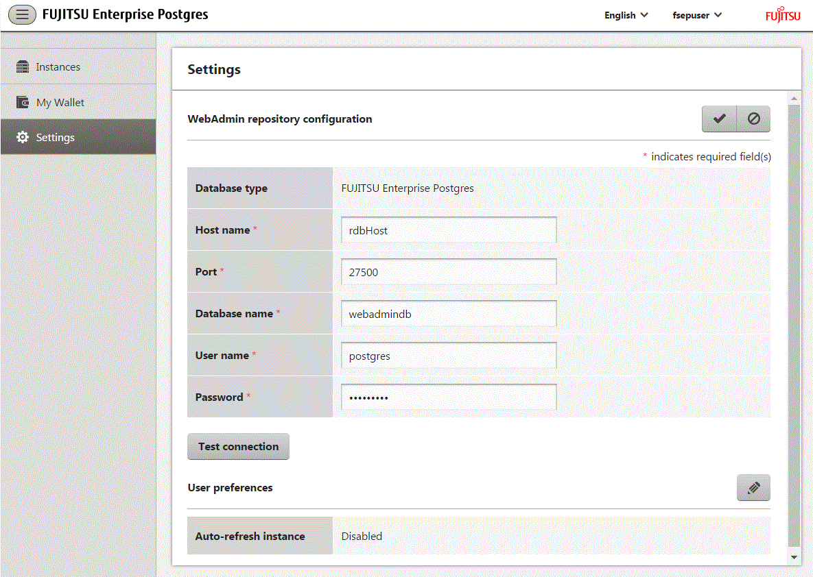

WebAdmin can be configured to use an external database, where it can store the various metadata information it uses. WebAdmin will use this database as a repository to store the information it uses to manage all the created instances. This can be a FUJITSU Enterprise Postgres database or an Open Source PostgreSQL V9.2 or later database.
Using an external database as a WebAdmin repository provides you with more flexibility in managing WebAdmin. This repository can be managed, backed up and restored as needed using pgAdmin or command line tools, allowing users to have greater flexibility and control.
Follow the procedure below to set up the repository.
Start WebAdmin, and log in to the database server.
Click the [Settings] tab, and then click  in the [WebAdmin repository configuration] section.
in the [WebAdmin repository configuration] section.

Enter the following items:
[Host name]: Host name of the database server
[Port]: Port number of the database server
[Database name]: Name of the database
[User name]: User name to access the database
[Password]: Password of the database user
Note
Database type
It is recommended to use a FUJITSU Enterprise Postgres database as a repository. A compatible PostgreSQL database can also be used as an alternative.
It is recommended to click [Test connection] to ensure that the details entered are valid and WebAdmin is able to connect to the target database.
Host name, Database name, User name, Password should not contain hazardous characters. Refer to "Appendix C WebAdmin Disallow User Inputs Containing Hazardous Characters".
Click to register the repository details.
Note
Once the repository is set up, it can be changed any number of times by the user logged into WebAdmin. When a repository is changed:
It is recommended to preload the backup into this database.
If the data is not preloaded, WebAdmin will create a new repository.
The database repository can be set up even after WebAdmin was already used to create instances. In that scenario, the instances already created are retained and can continue to be operated on.
If the instance used as a repository is stopped, WebAdmin will be unusable. For this reason, it is recommended to be familiar with starting an instance from the command line. If the instance is stopped for any reason, start it from the command line and WebAdmin will be usable again.